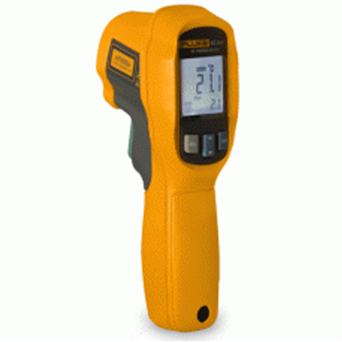

Главная / Каталог товаров / Контроль и диагностика / Инфракрасный пирометр Fluke 62 MAX
Инфракрасный пирометр Fluke 62 MAX
Арт. 0000000
30 000 рубИнфракрасный термометр Fluke 62 MAX с точностью ±1°C для бесконтактного измерения температуры. Идеален для использования в промышленности, HVAC и электронике. Защита от пыли и воды по стандарту IP54.
- Температура-30°C до 650°C
- Точность±1°C или ±1%
- Разрешение0.1°C
- Оптика12:1
- ЗащитаIP54
О пирометре Fluke 62 MAX
Fluke 62 MAX — это профессиональный инфракрасный пирометр для точных бесконтактных измерений температуры. Прибор обладает повышенной прочностью и защитой от падений с высоты до 3 метров.
Основные преимущества:
- Высокая точность измерений ±1°C
- Прочный корпус с защитой IP54 от пыли и воды
- Ударопрочность — выдерживает падение с 3 метров
- Эргономичный дизайн для удобной работы в перчатках
- Лазерный целеуказатель для точного наведения
- Функция удержания данных (HOLD)
- Автоматическое отключение для экономии батареи
Области применения:
Пирометр Fluke 62 MAX идеально подходит для измерения температуры в различных отраслях:
- Обслуживание систем отопления, вентиляции и кондиционирования (HVAC)
- Электротехника и электроника
- Пищевая промышленность
- Автомобильная промышленность
- Научные исследования и образование